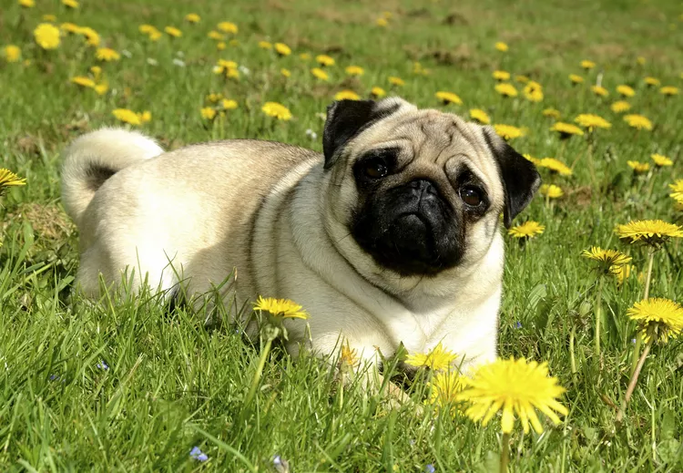
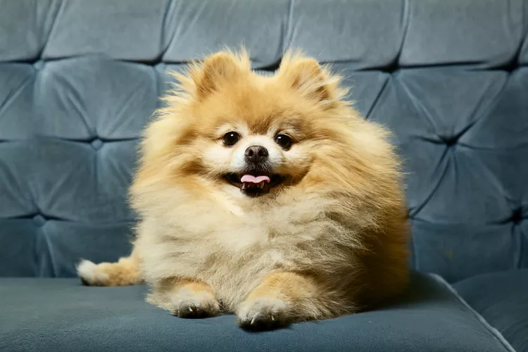

Very good service dog
Very good service dog
-
dangerous
dog >serious dog
-
 my dog Retriever
my dog Retriever
-
 />
Chihuahua
/>
Chihuahua
-  pug dog
-  Pomeranian
-
serious dog
-
Retriever
-
Chihuahua
- pug dog
- Pomeranian